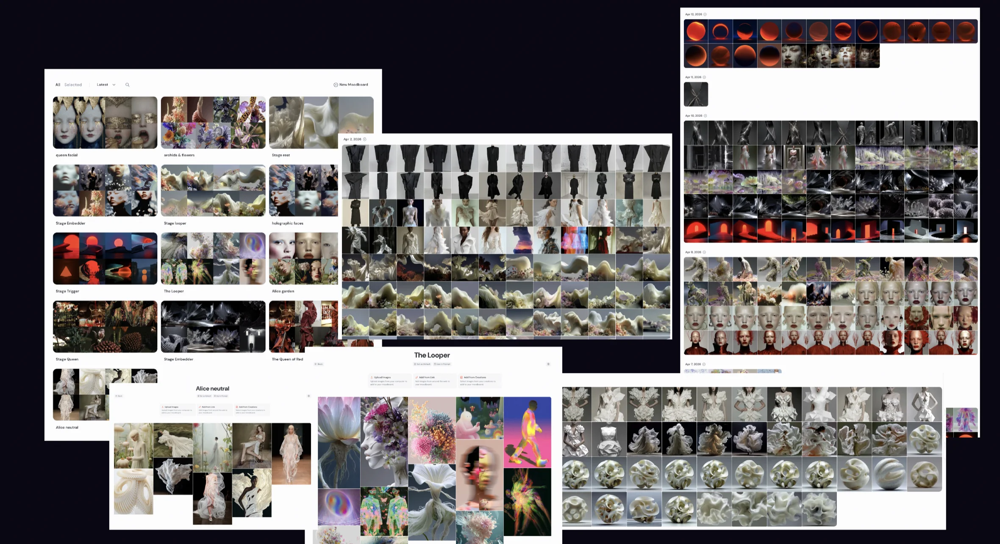

Brand & Visual Systems
Brand identities shaped through creative direction, systems thinking and AI exploration.
I develop visual identities, brand systems and image directions that connect strategy with a clear visual language. AI supports exploration, variation and speed, but the outcome is shaped by human taste, context and creative direction. The goal is not endless visual options. It is a coherent brand system that feels distinct, ownable and ready to live across digital touchpoints.

Visual opera

Installation Poster

Character Design
Brand identities and visual systems shaped through creative direction and AI exploration.

Stage Design
Visual TypeLogo

Iterate with AI.


Let's shape what's next.
Open for freelance projects, collaborations and AI-native creative systems.